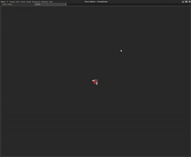
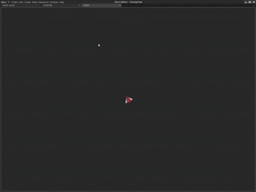
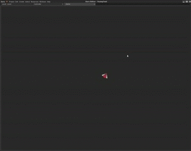

Rotating Towards a Point
This lesson shows how to use the Orientation component to rotate an object to face a particular point or direction.
Create a New Project
Level Setup
- Command :
CreateSpriteor - In the Properties Window
- Under the Sprite Component
- Set the SpriteSource to the provided sprite file
- Set Name to:
Ship - Add Orientation Component
- Under the Orientation Component
- Set DefaultOrientation to: ForwardYUpZ
- Set GlobalUp to: [0, 0, 1]
- Under the Sprite Component
Using Orientation
Add a new ZilchScript resource named: ‘FaceMouse’
- Change the FaceMouse script to the following code:
class FaceMouse : ZilchComponent
{
function Initialize(init : CogInitializer)
{
Zero.Connect(this.Space, Events.LogicUpdate, this.OnLogicUpdate);
}
function OnLogicUpdate(event : UpdateEvent)
{
// Get the mouse position on the screen
var mouseScreenPosition = Zero.Mouse.ScreenPosition;
// Convert the mouse position from screen coordinate to world coordinates
// use the main viewport for the level
var worldMousePosition = this.LevelSettings.CameraViewport.ScreenToWorldZPlane(mouseScreenPosition, 0);
// Look at this point
this.Owner.Orientation.LookAtPoint(worldMousePosition);
}
}
- Add the component FaceMouse to your Ship Sprite
- Save your project and run the game
Move your mouse around. You should see the object updating to the appropriate rotation to face the mouse each frame.

Rotate Towards
Let’s make it take longer to rotate:
- Replace the OnLogicUpdate with the following code.
function OnLogicUpdate(event : UpdateEvent)
{
// Get the mouse position on the screen
var mouseScreenPosition = Zero.Mouse.ScreenPosition;
// Convert the mouse position from screen coordinate to world coordinates
// use the main viewport for the level
var worldMousePosition = this.LevelSettings.CameraViewport.ScreenToWorldZPlane(mouseScreenPosition, 0);
// Get the rotation need to look at the point
var targetRotation = this.Owner.Orientation.GetLookAtPointRotation(worldMousePosition);
var currentRotation = this.Owner.Transform.Rotation;
// Move towards the needed rotation at a max rate
var maxTurnDegrees = 10;
var partialRotation =
Math.RotateTowards(currentRotation, targetRotation, Math.ToRadians(maxTurnDegrees) * event.Dt);
this.Owner.Transform.Rotation = partialRotation;
}

Now the object should update to rotate towards the appropriate rotation to face the mouse instead of just changing directly to it. Trying change the maxTurnDegrees to different values to see how it changes.
Move and Rotate
Change the OnLogicUpdate code to the following
function OnLogicUpdate(event : UpdateEvent)
{
// Get the mouse position on the screen
var mouseScreenPosition = Zero.Mouse.ScreenPosition;
// Convert the mouse position from screen coordinate to world coordinates
// use the main viewport for the level
var worldMousePosition = this.LevelSettings.CameraViewport.ScreenToWorldZPlane(mouseScreenPosition, 0);
// Get the rotation need to look at the point
var targetRotation = this.Owner.Orientation.GetLookAtPointRotation(worldMousePosition);
var currentRotation = this.Owner.Transform.Rotation;
// Move towards the needed rotation at a max rate
var maxTurnDegrees = 160;
var partialRotation =
Math.RotateTowards(currentRotation, targetRotation, Math.ToRadians(maxTurnDegrees) * event.Dt);
this.Owner.Transform.Rotation = partialRotation;
// Alway move forwards at moveSpeed
var moveSpeed = 4.0;
this.Owner.Transform.Translation += this.Owner.Orientation.WorldForward * event.Dt * moveSpeed;
}
Now the ship will chase the mouse.

Try changing both maxTurnDegrees and moveSpeed to see how these values effect the movement of the ship. Finally you can turn these into properties to have different chasing values.
| orphan: |
|---|